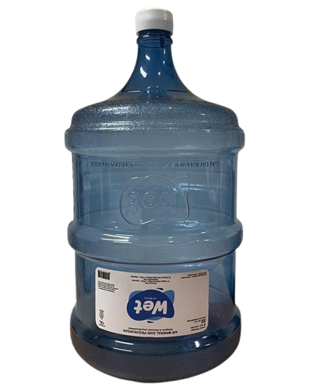

Wet Kesegaran & Kemurnian Yang Menyehatkan

Wet adalah produk air mineral sehat berkualitas. Diambil dari sumber air alam Caringin, Bogor, Jawa Barat. Sumber air terpilih telah diuji secara kimiawi, fisik dan geologi. Proses pengujian dilakukan dengan sangat ketat untuk memastikan didapatkannya sumber air baku berkualitas tinggi dan dapat diminum secara langsung.
diproses dengan teknologi modern dan memenuhi syarat untuk memenuhi Standar Nasional Indonesia (SNI). Diuji di laboratorium dan telah disertifikasi oleh Sucofindo. MUI (Majelis Ulama Indonesia) juga memberi kami sertifikat "halal".
Sertifikat: Badan POM, Standar Nasional Indonesia (SNI), Sertifikasi Halal dari Majelis Ulama Indonesia, Analisis Laboratorium Sucofindo, Spesifikasi Galon, SAI Global dan Alur Proses Produksi
"Menjadi perusahaan air minum terkemuka yang dapat memberi kesegaran & Kemurnian yang menyehatkan dalam setiap kandungan mineralnya"

Berikut merupakan layanan produk kami.

Kami akan melakukan inspeksi dispenser sesuai dengan permintaan pelanggan. Hal ini untuk memastikan dispenser siap digunakan sekaligus tidak mengganggu operasional pelanggan
Kami akan segera mengganti dispenser yang rusak dan kondisi umur dispenser yang sudah tua. Hal ini untuk mengantisipasi dan menghindari ketidaknyamanan dan gangguan selama jam operasional pelanggan.


Pengiriman tepat waktu adalah prioritas kami yang kami layani kepada semua pelanggan masing-masing.
Berikut di bawah ini layanan pengiriman kami :
kami sangat siap untuk mengirimkan 7 hari / minggu dan tetap standby selama 24 jam
Selain melakukan pengiriman daily fix order, kami juga menerima atau melayani order on call meskipun diluar waktu yang telah ditentukan
Kami melakukan pengiriman di sekitar JABODETABEK. Kami mempraktekkan prosedur yang sangat ketat terutama untuk masalah pengiriman operasional dan untuk tetap menjaga standar pengiriman kami. Kami melakukan beberapa rencana sistematis yang tepat untuk pergerakan dan aktivitas transportasi kami.